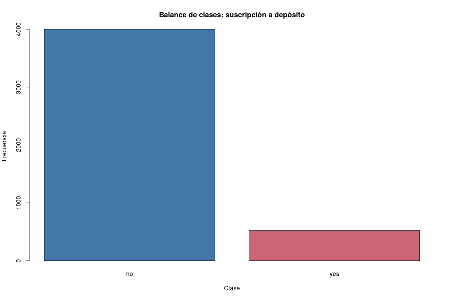
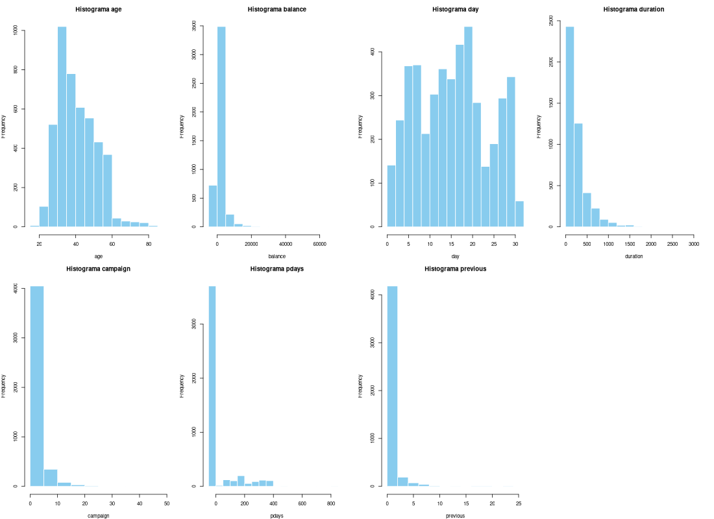
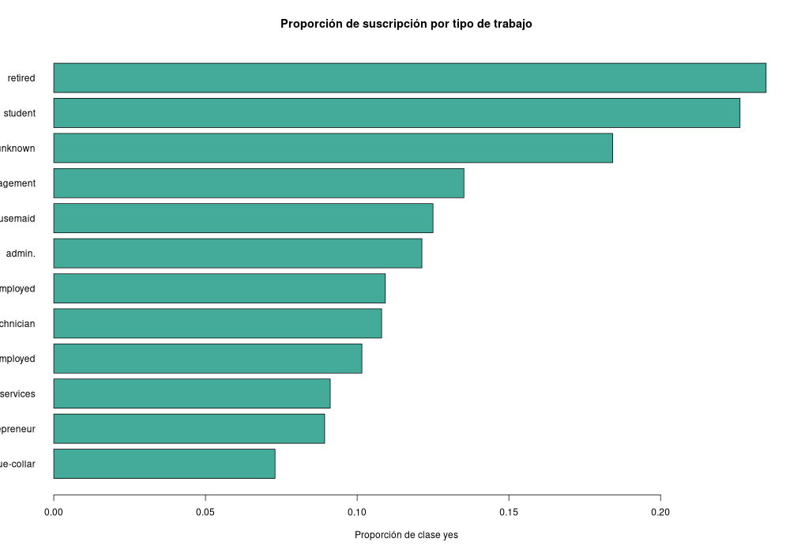
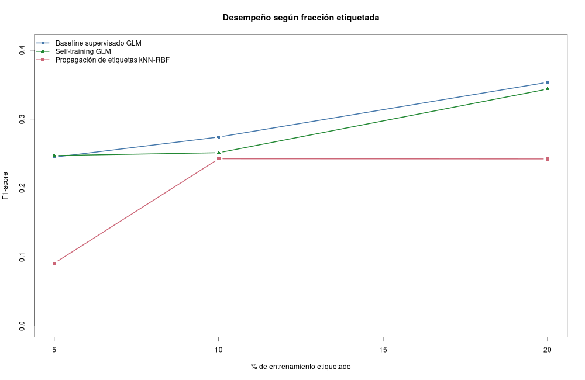
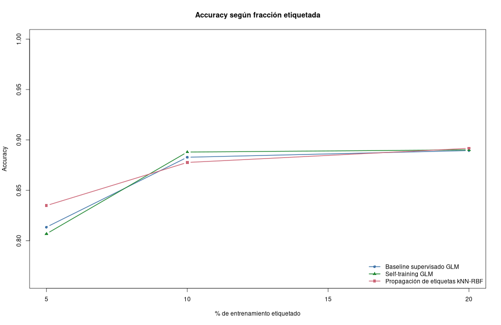
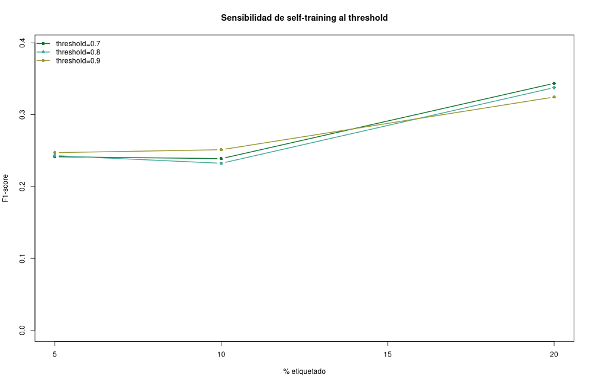
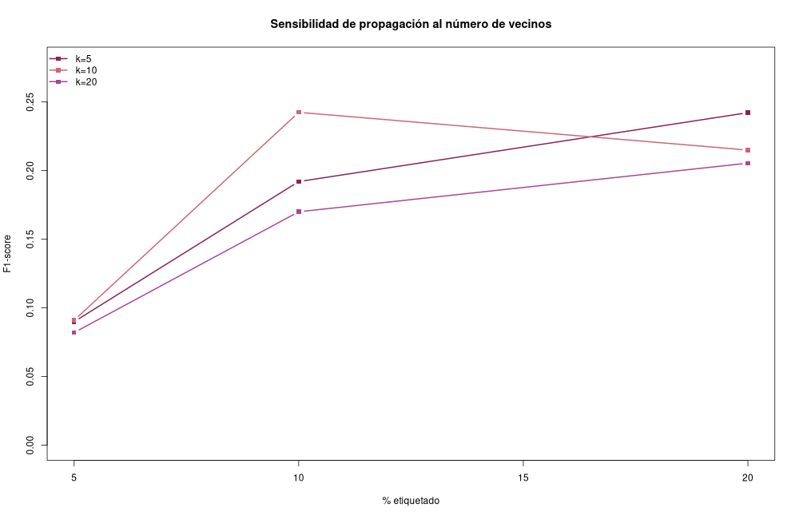
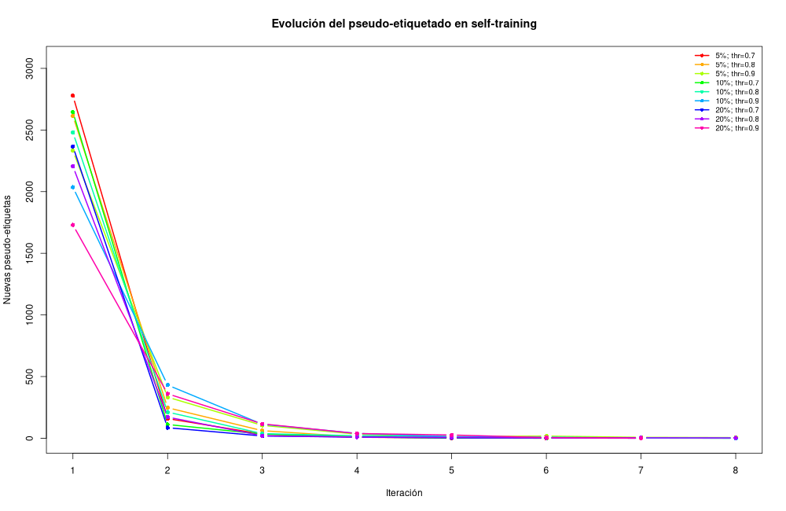
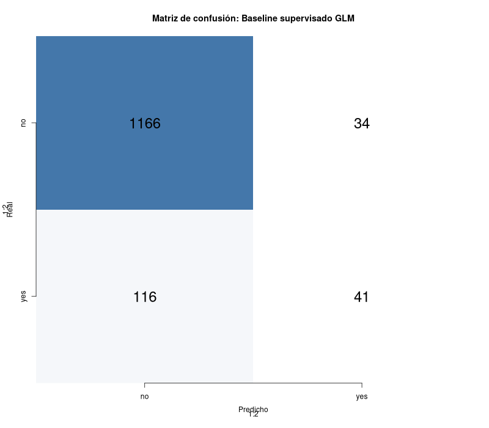

Autores: Jonathan Díaz, Martín Pérez, Karen
Toledo
Repositorio:
https://github.com/Jonialen/cosas-mineria
Dataset: Bank Marketing, UCI Machine Learning
Repository. DOI: https://doi.org/10.24432/C5K306
El objetivo de este laboratorio es evaluar algoritmos de aprendizaje
semi-supervisado en un escenario realista donde solo una fracción
pequeña de las observaciones tiene etiqueta disponible. Se utilizó el
conjunto Bank Marketing, que contiene información de campañas
telefónicas de una institución bancaria portuguesa. La variable objetivo
y indica si el cliente suscribió o no un depósito a
plazo.
El dataset usado contiene 4521 filas y 17 columnas, por lo que cumple el requisito de al menos 1000 observaciones y 8 variables. Es un dataset real y público de UCI.
| indicador | valor |
|---|---|
| filas | 4521.00 |
| columnas | 17.00 |
| clase_no | 4000.00 |
| clase_yes | 521.00 |
| porcentaje_yes | 11.52 |
| valores_na | 0.00 |
La clase positiva (yes) es minoritaria, lo cual hace que
accuracy por sí sola no sea suficiente. Por eso se reportan también
precision, recall y F1-score. Las figuras de EDA generadas son:
outputs/figures/01_balance_clases.png: balance de
clases.outputs/figures/02_histogramas_numericas.png:
distribución de variables numéricas.outputs/figures/03_suscripcion_por_trabajo.png:
relación entre tipo de trabajo y suscripción.Se aplicaron las siguientes transformaciones:
model.matrix, equivalente a one-hot encoding.balance.duration, porque la duración de la
llamada se conoce después del contacto y puede introducir fuga de
información para una predicción previa a la campaña.En el conjunto de entrenamiento se simuló disponibilidad parcial de etiquetas usando 5%, 10% y 20% de datos etiquetados. El resto de observaciones de entrenamiento se trató como no etiquetado para los algoritmos semi-supervisados. La prueba siempre conservó sus etiquetas reales, pero solo se usó al final para evaluación.
Se compararon tres enfoques:
La regresión logística estima la probabilidad condicional de la clase
positiva mediante la función sigmoide
p(y=1|x)=1/(1+exp(-beta x)). Sus parámetros se ajustan
maximizando la verosimilitud de las etiquetas observadas. En este
laboratorio solo ve el subconjunto etiquetado, por lo que su desempeño
depende fuertemente de cuán representativa sea esa pequeña muestra.
Self-training parte de un clasificador supervisado inicial. Luego
predice sobre datos no etiquetados y agrega al entrenamiento aquellos
casos cuya confianza es alta. Matemáticamente, se aproxima el problema
usando etiquetas latentes: si max(p, 1-p) >= threshold,
se acepta la pseudo-etiqueta argmax p(y|x). Su ventaja es
que puede ampliar el conjunto de entrenamiento sin etiquetado manual; su
riesgo principal es la propagación de errores, especialmente si el
threshold es bajo o el clasificador inicial está sesgado.
Los métodos de propagación representan las observaciones como nodos
de un grafo. Los pesos
w_ij = exp(-||x_i-x_j||^2/(2 sigma^2)) conectan vecinos
similares. La matriz de etiquetas se actualiza iterativamente con
F_{t+1}=alpha*S*F_t+(1-alpha)*Y, donde S es la
matriz de transición normalizada y Y contiene las etiquetas
conocidas. El supuesto central es suavidad: puntos cercanos en el
espacio de características tienden a compartir etiqueta. El
hiperparámetro k controla qué tan local o global es la
propagación.
La tabla siguiente resume todas las corridas. El F1-score es clave porque la clase positiva es minoritaria.
| modelo | porcentaje_etiquetado | hiperparametro | accuracy | precision | recall | f1 | pseudoetiquetas |
|---|---|---|---|---|---|---|---|
| Baseline supervisado GLM | 5% | - | 0.8136 | 0.2303 | 0.2611 | 0.2448 | 0 |
| Baseline supervisado GLM | 10% | - | 0.8828 | 0.4839 | 0.1911 | 0.2740 | 0 |
| Baseline supervisado GLM | 20% | - | 0.8895 | 0.5467 | 0.2611 | 0.3534 | 0 |
| Propagación de etiquetas kNN-RBF | 5% | k=10 | 0.8231 | 0.1121 | 0.0764 | 0.0909 | 3006 |
| Propagación de etiquetas kNN-RBF | 5% | k=20 | 0.8349 | 0.1149 | 0.0637 | 0.0820 | 3006 |
| Propagación de etiquetas kNN-RBF | 5% | k=5 | 0.8209 | 0.1091 | 0.0764 | 0.0899 | 3006 |
| Propagación de etiquetas kNN-RBF | 10% | k=10 | 0.8710 | 0.3784 | 0.1783 | 0.2424 | 2848 |
| Propagación de etiquetas kNN-RBF | 10% | k=20 | 0.8777 | 0.3953 | 0.1083 | 0.1700 | 2848 |
| Propagación de etiquetas kNN-RBF | 10% | k=5 | 0.8511 | 0.2581 | 0.1529 | 0.1920 | 2848 |
| Propagación de etiquetas kNN-RBF | 20% | k=10 | 0.8762 | 0.4035 | 0.1465 | 0.2150 | 2532 |
| Propagación de etiquetas kNN-RBF | 20% | k=20 | 0.8917 | 0.6786 | 0.1210 | 0.2054 | 2532 |
| Propagación de etiquetas kNN-RBF | 20% | k=5 | 0.8570 | 0.3131 | 0.1975 | 0.2422 | 2532 |
| Self-training GLM | 5% | threshold=0.7 | 0.8055 | 0.2199 | 0.2675 | 0.2414 | 2980 |
| Self-training GLM | 5% | threshold=0.8 | 0.8025 | 0.2183 | 0.2739 | 0.2429 | 2941 |
| Self-training GLM | 5% | threshold=0.9 | 0.8069 | 0.2251 | 0.2739 | 0.2471 | 2844 |
| Self-training GLM | 10% | threshold=0.7 | 0.8873 | 0.5455 | 0.1529 | 0.2388 | 2803 |
| Self-training GLM | 10% | threshold=0.8 | 0.8880 | 0.5610 | 0.1465 | 0.2323 | 2770 |
| Self-training GLM | 10% | threshold=0.9 | 0.8858 | 0.5200 | 0.1656 | 0.2512 | 2640 |
| Self-training GLM | 20% | threshold=0.7 | 0.8902 | 0.5571 | 0.2484 | 0.3436 | 2484 |
| Self-training GLM | 20% | threshold=0.8 | 0.8873 | 0.5270 | 0.2484 | 0.3377 | 2421 |
| Self-training GLM | 20% | threshold=0.9 | 0.8865 | 0.5211 | 0.2357 | 0.3246 | 2275 |
Mejor configuración por familia de modelo:
| modelo | porcentaje_etiquetado | hiperparametro | accuracy | precision | recall | f1 |
|---|---|---|---|---|---|---|
| Baseline supervisado GLM | 20% | - | 0.8895 | 0.5467 | 0.2611 | 0.3534 |
| Propagación de etiquetas kNN-RBF | 10% | k=10 | 0.8710 | 0.3784 | 0.1783 | 0.2424 |
| Self-training GLM | 20% | threshold=0.7 | 0.8902 | 0.5571 | 0.2484 | 0.3436 |
El mejor resultado global por F1 fue Baseline supervisado
GLM con 20% de etiquetas y - (F1 = 0.3534). Entre
los métodos semi-supervisados, el mejor fue Self-training
GLM con threshold=0.7 y 20% de etiquetas (F1 =
0.3436).
En self-training, el threshold controla el intercambio entre cantidad
y confiabilidad de pseudo-etiquetas. Un threshold bajo agrega más datos,
pero puede introducir ruido. Un threshold alto agrega menos ejemplos,
aunque usualmente con menor error. En propagación de etiquetas,
k controla la conectividad del grafo: valores bajos hacen
una propagación local y sensible a ruido; valores altos suavizan más,
pero pueden mezclar regiones de clases distintas.
Figuras de resultados:
outputs/figures/03_f1_por_porcentaje.png: curva de F1
por porcentaje etiquetado.outputs/figures/04_accuracy_por_porcentaje.png: curva
de accuracy por porcentaje etiquetado.outputs/figures/05_sensibilidad_self_training.png:
sensibilidad del threshold.outputs/figures/06_sensibilidad_label_propagation.png:
sensibilidad del número de vecinos.outputs/figures/07_evolucion_pseudoetiquetas.png:
evolución de pseudo-etiquetas agregadas por iteración.outputs/figures/08_matriz_confusion_mejor_modelo.png:
matriz de confusión del mejor modelo.El escenario semi-supervisado muestra que disponer de más observaciones no etiquetadas no garantiza mejora automática. Self-training puede mejorar cuando el clasificador inicial produce pseudo-etiquetas confiables; sin embargo, si el modelo inicial aprende el sesgo hacia la clase mayoritaria, puede reforzarlo. La propagación por grafo aprovecha relaciones locales entre clientes similares, pero depende de que la representación de características y la métrica de distancia sean apropiadas. Debido al desbalance de clases, se debe interpretar accuracy con cuidado y priorizar F1/recall para evaluar recuperación de clientes que sí suscriben.
Con base en el F1-score, el mejor modelo semi-supervisado observado
fue Self-training GLM bajo la configuración
threshold=0.7 y 20% de datos etiquetados. El baseline
supervisado con 20% de etiquetas quedó levemente por encima, lo que
indica que las pseudo-etiquetas no siempre mejoran el desempeño cuando
la clase positiva es escasa. El laboratorio confirma que el aprendizaje
semi-supervisado es útil cuando las etiquetas son escasas, pero exige
controlar hiperparámetros y analizar errores para evitar propagación de
pseudo-etiquetas incorrectas. En este dataset, el desbalance de clases y
la eliminación de duration hacen el problema más realista y
más difícil, por lo que F1, precision y recall aportan una lectura más
honesta que accuracy.
outputs/metricas_modelos.csvoutputs/matrices_confusion.csvoutputs/mejores_por_modelo.csvoutputs/self_training_historial.csvoutputs/figures/*.pngTodo el análisis se ejecuta con
Rscript lab10_semisupervisado.R y usa únicamente funciones
de base R/stats/graphics, para evitar depender de paquetes externos no
instalados en el ambiente de ejecución.








